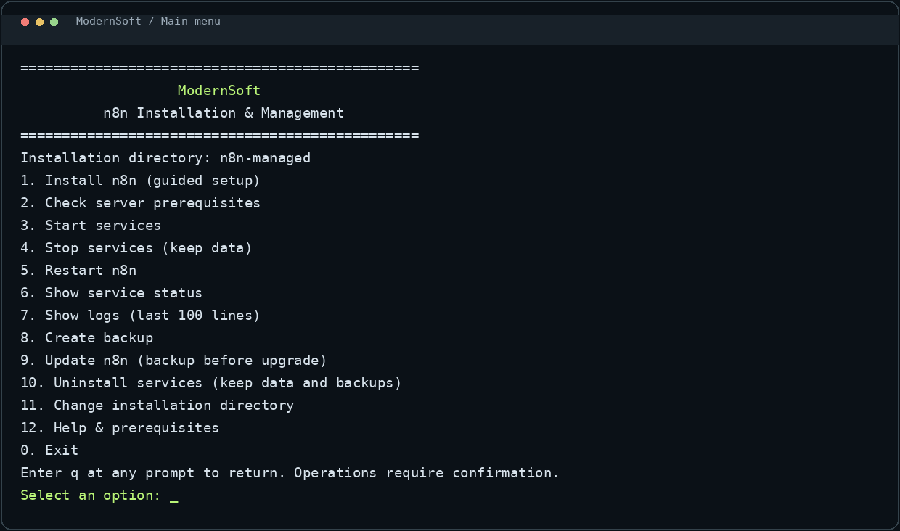
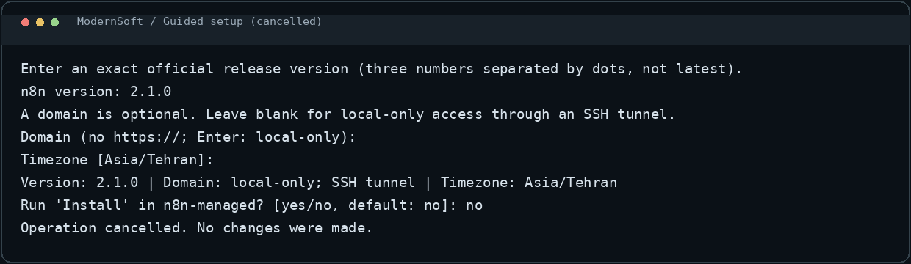
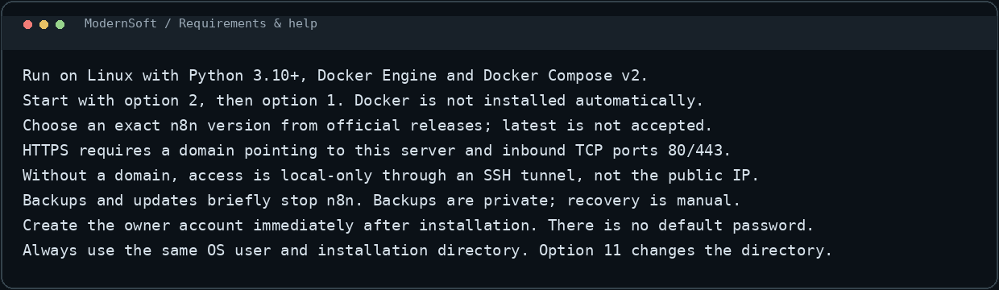

Choose an exact version, an optional domain and a timezone. Review settings before confirming.
n8n deployment manager
Your workflows.
Your infrastructure.
A menu-driven tool for deploying and managing n8n on your Linux server, with PostgreSQL, optional HTTPS, private backups and controlled updates. Guided steps put you in control of each operation.
Open the menu on your server
bash n8n.shBack up the database, application files and encryption settings. Uninstall retains data and backups.
Updates create a backup first and check service health. Downgrades are blocked; recovery is manual.
Inside the application
Images rendered from actual CLI output, not from a deployed server. Select an image to view it at full size. The version shown is an input example, not a release recommendation.






Getting started & requirements
Use Linux with Python 3.10+, Docker Engine and Docker Compose v2. Keep n8n.sh and n8n_manager.py together, then run bash n8n.sh.
Select option 2 to check prerequisites, then option 1 for installation. HTTPS requires a domain pointing to the server and inbound TCP ports 80/443. Without a domain, use an SSH tunnel for local-only access.
Backups and updates briefly stop n8n. Backups are sensitive and are not encrypted by this tool. Create the owner account immediately. Docker installation, firewall changes and automatic recovery are not performed.